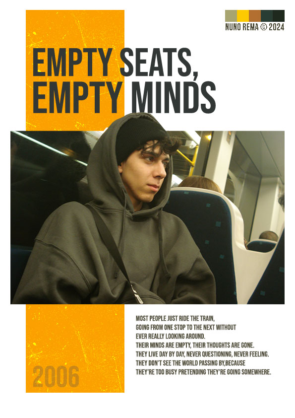
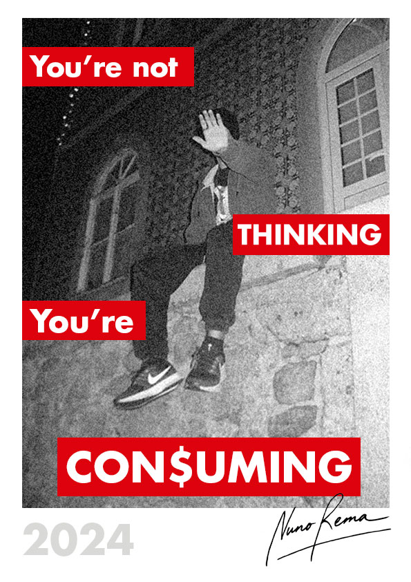
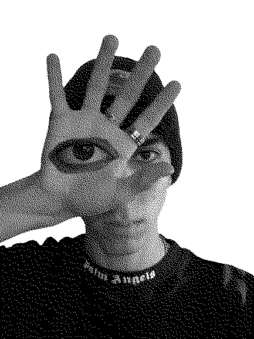
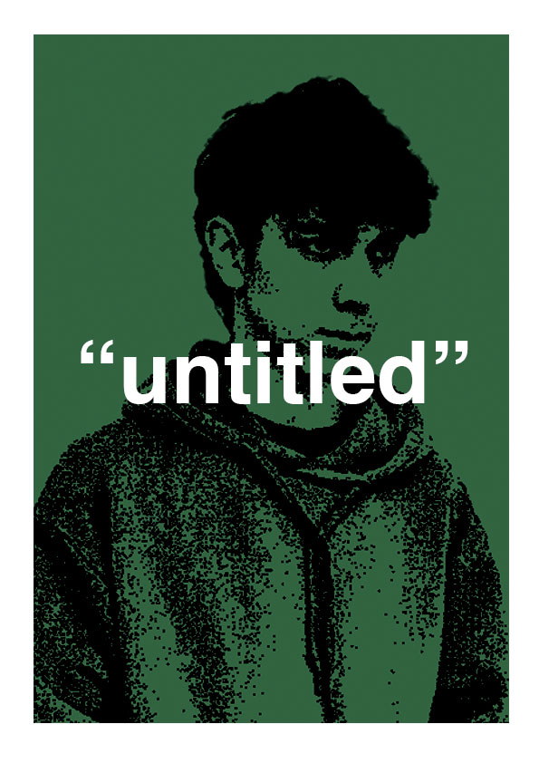
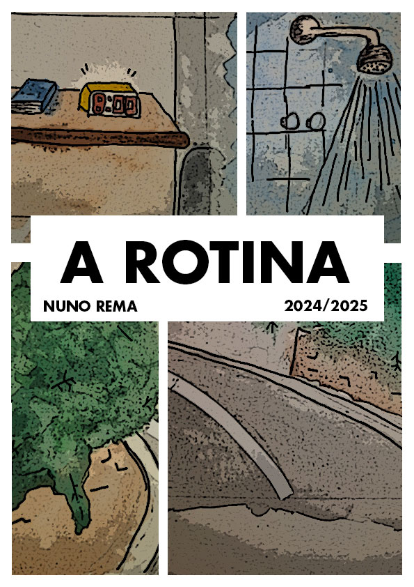

Este portfolio foi criado com o intuito de expor os trabalhos realizados na oficina de multimedia. Em todos os trabalhos deste projeto tentei manter uma linguagem minimalista e moderna.
O que foi realizado?
O website foi desenvolvido com HTML para a estrutura, CSS (usando Tailwind CSS) para o estilo e JavaScript para adicionar interatividade. Sendo depois publicado no github aonde está alojado. Este projeto é opensource e todo o codigo está livremente disponivel.